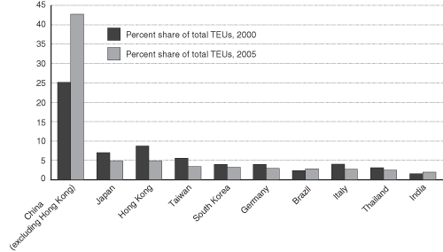

Excel | CSV | Table Version
SOURCE: U.S. Department of Transportation, Research and Innovative Technology Administration, Bureau of Transportation Statistics, based on data from U.S. Department of Transportation, Maritime Administration which are drawn from the Journal of Commerce, Port Import/Export Reporting Service (PIERS) data system, and available at www.marad.dot.gov, as of November 2006.